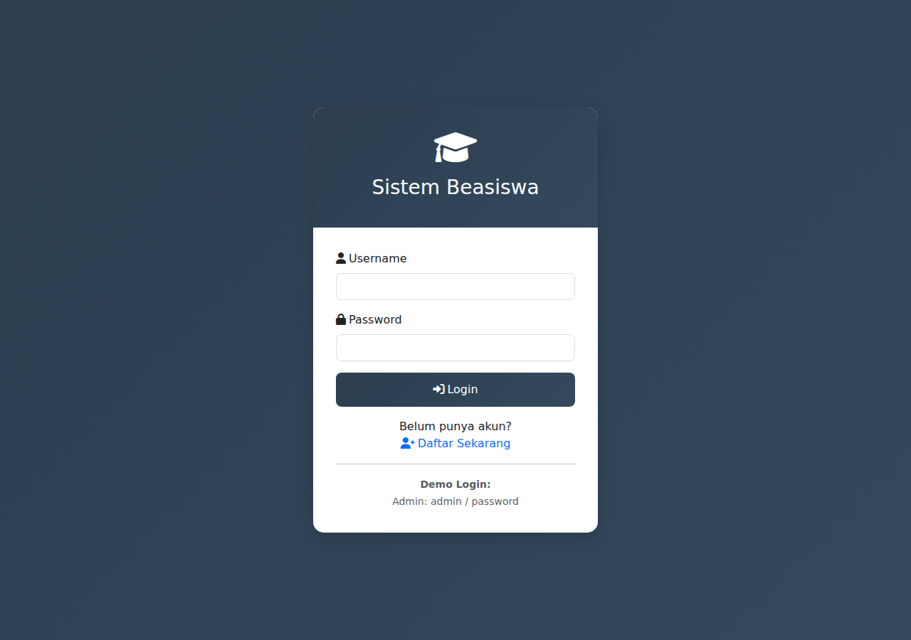

PROYEK
Beasiswa
2018 – 2026
·
Local / Request Access

Tentang Proyek
Sistem informasi beasiswa berbasis web untuk institusi pendidikan lokal. Dibangun untuk menangani alur data penerimaan beasiswa dari awal hingga akhir — dari pendaftaran siswa, proses verifikasi admin, hingga pelaporan data penerima.
Dikembangkan untuk instansi yang butuh pencatatan simpel dengan autentikasi terpisah (admin & siswa), ekspor laporan untuk audit, dan tampilan yang dapat digunakan oleh pengguna non-teknis.
Fitur Utama
- → Pendaftaran siswa online dengan form data diri & dokumen
- → Dashboard admin untuk verifikasi & persetujuan
- → Pelaporan data penerima beasiswa (per periode)
- → Autentikasi terpisah untuk admin dan siswa
- → Export laporan untuk kebutuhan audit
Tech Stack
PHP
MySQL
Bootstrap
Ingin melihat demo?
Aplikasi ini berjalan di server lokal. Hubungi saya untuk request akses preview atau konsultasi proyek serupa.